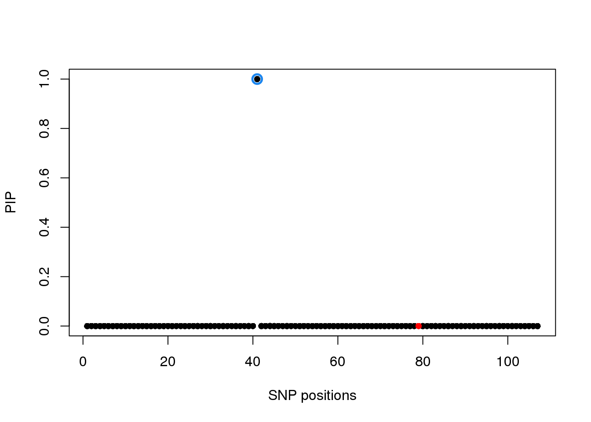
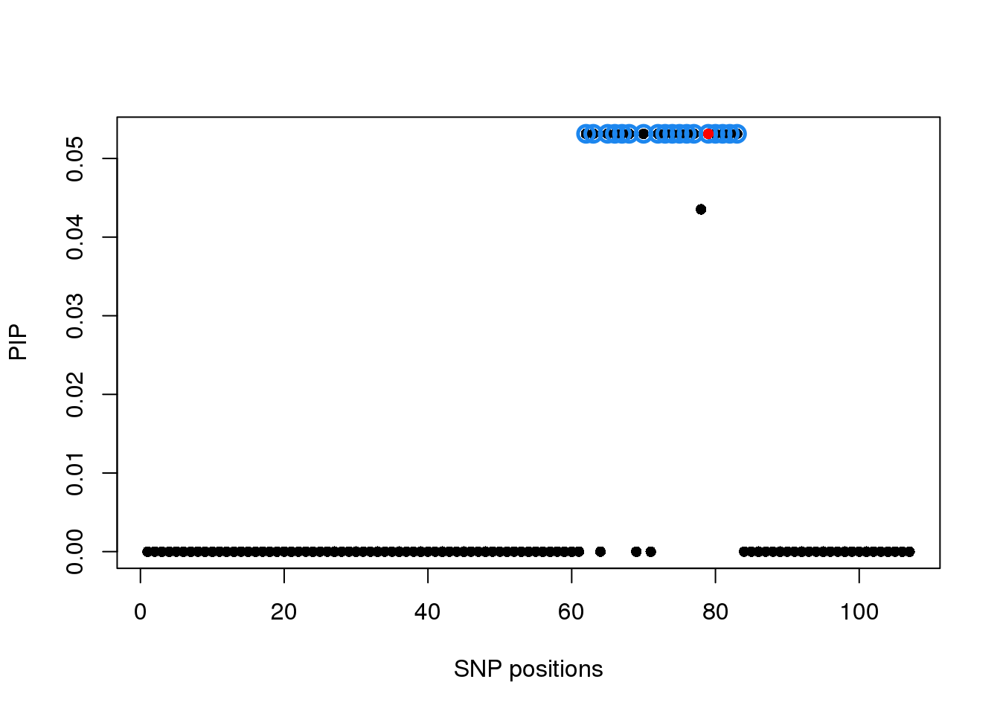

M&M RSS V Problem
Yuxin Zou
02/28/2020
Last updated: 2020-03-01
Checks: 7 0
Knit directory: mmbr-rss-dsc/
This reproducible R Markdown analysis was created with workflowr (version 1.6.0). The Checks tab describes the reproducibility checks that were applied when the results were created. The Past versions tab lists the development history.
Great! Since the R Markdown file has been committed to the Git repository, you know the exact version of the code that produced these results.
Great job! The global environment was empty. Objects defined in the global environment can affect the analysis in your R Markdown file in unknown ways. For reproduciblity it’s best to always run the code in an empty environment.
The command set.seed(20200227) was run prior to running the code in the R Markdown file. Setting a seed ensures that any results that rely on randomness, e.g. subsampling or permutations, are reproducible.
Great job! Recording the operating system, R version, and package versions is critical for reproducibility.
Nice! There were no cached chunks for this analysis, so you can be confident that you successfully produced the results during this run.
Great job! Using relative paths to the files within your workflowr project makes it easier to run your code on other machines.
Great! You are using Git for version control. Tracking code development and connecting the code version to the results is critical for reproducibility. The version displayed above was the version of the Git repository at the time these results were generated.
Note that you need to be careful to ensure that all relevant files for the analysis have been committed to Git prior to generating the results (you can use wflow_publish or wflow_git_commit). workflowr only checks the R Markdown file, but you know if there are other scripts or data files that it depends on. Below is the status of the Git repository when the results were generated:
Untracked files:
Untracked: data/lite_data_6.rds
Untracked: data/lite_data_6_shared_1.pkl
Untracked: data/lite_data_6_shared_1_get_sumstats_1.rds
Untracked: data/lite_data_6_shared_1_get_sumstats_1_oracle_generator_1_mnm_rss_shared_16.rds
Untracked: output/mnm_rss_lite_output.20200227.rds
Untracked: output/mnm_rss_lite_output.20200229.rds
Unstaged changes:
Modified: analysis/mmbr_rss_simulation_1.Rmd
Note that any generated files, e.g. HTML, png, CSS, etc., are not included in this status report because it is ok for generated content to have uncommitted changes.
These are the previous versions of the R Markdown and HTML files. If you’ve configured a remote Git repository (see ?wflow_git_remote), click on the hyperlinks in the table below to view them.
| File | Version | Author | Date | Message |
|---|---|---|---|---|
| Rmd | 31cb7b6 | zouyuxin | 2020-03-01 | wflow_publish(“analysis/mmbr_rss_simulation_1_problem.Rmd”) |
library(mmbr)Loading required package: mashrLoading required package: ashrDSC = dscrutils:::load_inputs(c('data/lite_data_6.rds','data/lite_data_6_shared_1.pkl', 'data/lite_data_6_shared_1_get_sumstats_1.rds', 'data/lite_data_6_shared_1_get_sumstats_1_oracle_generator_1_mnm_rss_shared_16.rds'), dscrutils:::read_dsc)
X = DSC$X
meta = DSC$meta
ss = DSC$sumstats
Z = as.matrix(ss$bhat/ss$shat)
r = cor(X)
prior = DSC$prior
Y = DSC$Y_sim
true_pos = as.integer(apply(meta$true_coef, 1, sum) != 0)where \(X\) is column standardized.
We compute z scores from simple linear regression, which has following distribution \[\begin{align} \hat{Z} &\sim MN(RZ, R, V), \\ V &= diag(sd(Y)) \left(\begin{matrix} 0.0366 & 0 & 0 & 0 & 0 \\ 0 & 0.0337 & 0 & 0 & 0 \\ 0 & 0 & 0.0357 & 0 & 0 \\ 0 & 0 & 0 & 0.0351 & 0 \\ 0 & 0 & 0 & 0 & 0.036 \end{matrix}\right) diag(sd(Y)) \\ &= \left( \begin{matrix} 0.8977 & 0 & 0 & 0 & 0 \\ 0 & 0.896 & 0 & 0 & 0 \\ 0 & 0 & 0.9325 & 0 & 0 \\ 0 & 0 & 0 & 0.867 & 0 \\ 0 & 0 & 0 & 0 & 0.8983 \end{matrix} \right) \end{align}\]Oracle residual variance
resid_Z_oracle <- meta$residual_variance/apply(Y, 2, var)
xUlist = lapply(prior$xUlist, function(U) t(t(U*nrow(Y)/apply(Y, 2, sd))/apply(Y, 2, sd)))
# xUlist = lapply(prior$xUlist, function(U) U*nrow(Y))
m_init = mmbr::create_mash_prior(mixture_prior = list(matrices=xUlist, weights=prior$pi), null_weight=prior$null_weight, max_mixture_len=-1)
fit1 = mmbr::msusie_rss(Z, r, L=1, prior_variance=m_init, residual_variance=resid_Z_oracle, compute_objective=TRUE, estimate_residual_variance=F, estimate_prior_variance=T, estimate_prior_method='simple')Warning in mmbr_core(data, s_init, L, residual_variance, prior_variance, :
precompute_covariances option is set to FALSE by default to save memory
usage with MASH prior. The computation will be a lot slower as a result.
It is recommended that you try setting it to TRUE, see if there is a memory
usage issue and only switch back if it is a problem.susieR::susie_plot(fit1,y='PIP', xlab = 'SNP positions', b=true_pos)
The elbo is
fit1$elbo[1] -4294.582 -4294.582Estimate V from Z
resid_Z_all = cor(Z)
round(resid_Z_all, 4) [,1] [,2] [,3] [,4] [,5]
[1,] 1.0000 0.9738 0.9573 0.9411 0.9764
[2,] 0.9738 1.0000 0.9662 0.9688 0.9807
[3,] 0.9573 0.9662 1.0000 0.9596 0.9723
[4,] 0.9411 0.9688 0.9596 1.0000 0.9642
[5,] 0.9764 0.9807 0.9723 0.9642 1.0000m_init = mmbr::create_mash_prior(mixture_prior = list(matrices=xUlist, weights=prior$pi), null_weight=prior$null_weight, max_mixture_len=-1)
fit2 = mmbr::msusie_rss(Z, r, L=1, prior_variance=m_init, residual_variance=resid_Z_all, compute_objective=TRUE, estimate_residual_variance=F, estimate_prior_variance=T, estimate_prior_method='simple')Warning in mmbr_core(data, s_init, L, residual_variance, prior_variance, :
precompute_covariances option is set to FALSE by default to save memory
usage with MASH prior. The computation will be a lot slower as a result.
It is recommended that you try setting it to TRUE, see if there is a memory
usage issue and only switch back if it is a problem.susieR::susie_plot(fit2,y='PIP', xlab = 'SNP positions', b=true_pos)
The elbo is
fit2$elbo[1] -23882.11 -23882.11Estimate V from null Z
max_absz = apply(abs(Z),1, max)
nullish = which(max_absz < 2) # length 17
nullish_z = Z[nullish,]
resid_Z_null <- cor(nullish_z)
resid_Z_null [,1] [,2] [,3] [,4] [,5]
[1,] 1.00000000 -0.1328228 -0.1048471 -0.06969663 0.02477598
[2,] -0.13282278 1.0000000 0.5324289 0.36954405 -0.35653624
[3,] -0.10484711 0.5324289 1.0000000 0.50894988 0.35112068
[4,] -0.06969663 0.3695440 0.5089499 1.00000000 -0.10860863
[5,] 0.02477598 -0.3565362 0.3511207 -0.10860863 1.00000000m_init = mmbr::create_mash_prior(mixture_prior = list(matrices=xUlist, weights=prior$pi), null_weight=prior$null_weight, max_mixture_len=-1)
fit3 = mmbr::msusie_rss(Z, r, L=1, prior_variance=m_init, residual_variance=resid_Z_null, compute_objective=TRUE, estimate_residual_variance=F, estimate_prior_variance=T, estimate_prior_method='simple')Warning in mmbr_core(data, s_init, L, residual_variance, prior_variance, :
precompute_covariances option is set to FALSE by default to save memory
usage with MASH prior. The computation will be a lot slower as a result.
It is recommended that you try setting it to TRUE, see if there is a memory
usage issue and only switch back if it is a problem.susieR::susie_plot(fit3,y='PIP', xlab = 'SNP positions', b=true_pos)
The elbo is
fit3$elbo[1] -2996.669 -2996.669Estimate V as identity
resid_Z_identity = diag(ncol(Z))m_init = mmbr::create_mash_prior(mixture_prior = list(matrices=xUlist, weights=prior$pi), null_weight=prior$null_weight, max_mixture_len=-1)
fit4 = mmbr::msusie_rss(Z, r, L=1, prior_variance=m_init, residual_variance=resid_Z_identity, compute_objective=TRUE, estimate_residual_variance=F, estimate_prior_variance=T, estimate_prior_method='simple')Warning in mmbr_core(data, s_init, L, residual_variance, prior_variance, :
precompute_covariances option is set to FALSE by default to save memory
usage with MASH prior. The computation will be a lot slower as a result.
It is recommended that you try setting it to TRUE, see if there is a memory
usage issue and only switch back if it is a problem.susieR::susie_plot(fit4,y='PIP', xlab = 'SNP positions', b=true_pos)
The elbo is
fit4$elbo[1] -3944.114 -3944.114
sessionInfo()R version 3.5.1 (2018-07-02)
Platform: x86_64-pc-linux-gnu (64-bit)
Running under: Scientific Linux 7.4 (Nitrogen)
Matrix products: default
BLAS/LAPACK: /software/openblas-0.2.19-el7-x86_64/lib/libopenblas_haswellp-r0.2.19.so
locale:
[1] LC_CTYPE=en_US.UTF-8 LC_NUMERIC=C
[3] LC_TIME=en_US.UTF-8 LC_COLLATE=en_US.UTF-8
[5] LC_MONETARY=en_US.UTF-8 LC_MESSAGES=en_US.UTF-8
[7] LC_PAPER=en_US.UTF-8 LC_NAME=C
[9] LC_ADDRESS=C LC_TELEPHONE=C
[11] LC_MEASUREMENT=en_US.UTF-8 LC_IDENTIFICATION=C
attached base packages:
[1] stats graphics grDevices utils datasets methods base
other attached packages:
[1] mmbr_0.0.1.0292 mashr_0.2.21.0651 ashr_2.2-47
loaded via a namespace (and not attached):
[1] Rcpp_1.0.3 susieR_0.9.0.0581 compiler_3.5.1
[4] later_0.7.5 git2r_0.26.1 plyr_1.8.5
[7] workflowr_1.6.0 prettyunits_1.1.1 tools_3.5.1
[10] progress_1.2.2 digest_0.6.25 jsonlite_1.6
[13] evaluate_0.12 lattice_0.20-38 pkgconfig_2.0.3
[16] rlang_0.4.4 Matrix_1.2-15 yaml_2.2.0
[19] mvtnorm_1.0-12 invgamma_1.1 stringr_1.4.0
[22] knitr_1.20 dscrutils_0.4.2 vctrs_0.2.3
[25] hms_0.5.3 fs_1.3.1 rprojroot_1.3-2
[28] grid_3.5.1 reticulate_1.10 data.table_1.12.8
[31] glue_1.3.1 R6_2.4.1 rmarkdown_1.10
[34] mixsqp_0.3-20 irlba_2.3.3 rmeta_3.0
[37] magrittr_1.5 whisker_0.3-2 backports_1.1.5
[40] promises_1.0.1 htmltools_0.3.6 matrixStats_0.55.0
[43] abind_1.4-5 assertthat_0.2.1 httpuv_1.4.5
[46] stringi_1.4.3 truncnorm_1.0-8 SQUAREM_2020.2
[49] crayon_1.3.4